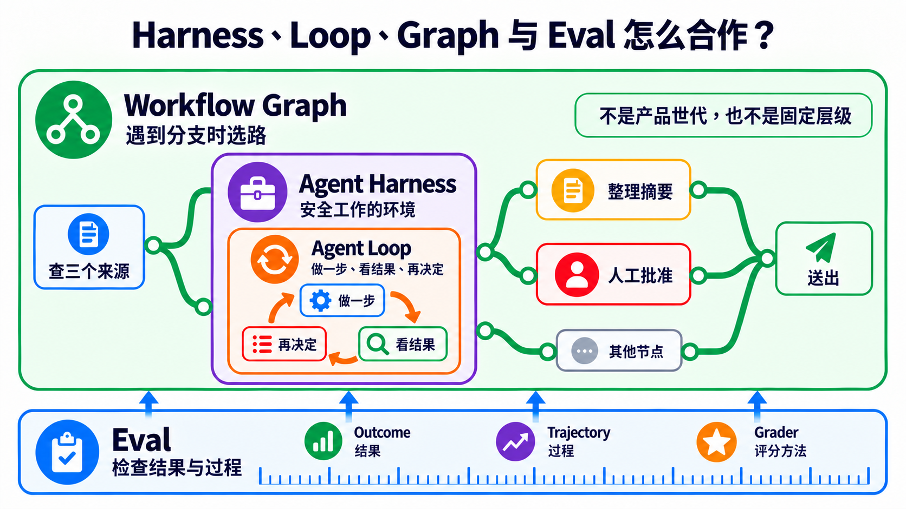
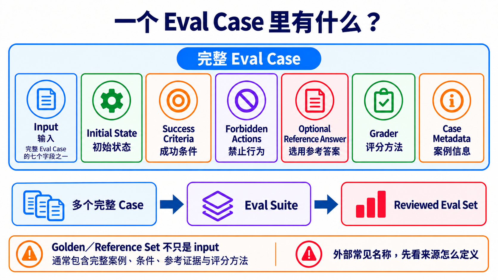

原课程本地核对资料，保留原内容与顺序。外链已改为本地阅读入口。命令中的原仓库路径请按本课运行指南换成实际位置；版本差异见本课说明。MIT © 2026 Wenyu Chiou。
Stage 7 — Agent 上线工程：可测、可看、可停、可恢复
先让 AI 帮手可测、可看、可停、可恢复，再交给别人使用。
🎯 这一关在做什么（先定位）
让 Agent 可测、可看、可停、可恢复。这称为 Agent Production Engineering（Agent 上线工程）。像玩具车先装方向盘、刹车与仪表板；不需大规模。
全章用一个故事：AI 帮手查三个来源、整理摘要，送出前先请人确认。
先记住上线顺序：
先说清楚怎样算成功 → 留下做事纪录 → 危险动作先问人 → 确认跌倒后能继续 → 最后才交给别人使用。
| 你现在卡在哪里 | 先做什么 | 你要拿出的证据 |
|---|---|---|
| 不知道摘要算不算成功 | 先写固定案例与成功条件 | 可重跑的检查结果 |
| 出错时不知道坏在哪一步 | 记录每一步、错误、时间与成本 | 一次完整做事纪录 |
| 会寄信、付款、删除或写入数据 | 在动作前停下来问人，并先保存进度 | 谁同意了，以及要从哪里继续 |
| 前三项都能重跑并通过 | 才交给别人使用 | 系统是否正常、怎么停止、怎么回到旧版 |
先做稳单一 Agent；需要独立分工或互相检查时，再加 Agent。
⏱ 展开：时间、环境、费用与安全提醒
- 建议分成数次短练习，不必一次做完。
- 需要 Python、Git；部署练习另需 Docker。
- 每个练习都先跑不需 API 密钥的测试。要调用付费模型时，先设小额预算。
- 做事纪录可能包含提示、工具输入与模型回答。不要把密码、个资或客户数据直接送进追踪平台。
- 多一个 Agent 通常就多一份模型调用、延迟与调试工作。不要假设多 Agent 一定比较快或比较准。
📌 学习目标
完成本章后，你能：
- 分清 AI 帮手工作的地方、反复做事的节奏和带岔路的完整路线。
- 把真实失败写成可重跑的测试，不只看一次漂亮回答。
- 找到一次任务里的每一步、错误、时间与成本。
- 让高风险动作先停下问人，并能从正确位置继续。
- 用同一组证据判断系统能不能交给别人使用。
🧩 先认识十九个核心词
先看“五岁也能懂的说法”抓住方向，再看“本章用途／技术边界”了解这一关怎么使用它。同类词已经合并在同一组，不需要读两次。
| 先解决什么 | 核心词 | 五岁也能懂的说法 | 本章用途／技术边界 |
|---|---|---|---|
| 先让任务跑得动 | Agent Harness（Agent 执行架构） | AI 帮手工作的房间 | 放入模型、工具、权限、状态、错误处理与纪录的执行环境；本章用它安全地查资料与准备摘要 |
| Agent Loop（Agent 循环） | 做一步、看结果，再决定下一步 | 模型在一次任务里反复选动作、读取工具结果，直到完成、超出限制或需要问人 | |
| Workflow Graph（工作流程图） | 有岔路的路线图 | 用步骤、连接、条件与状态排出不同情况该走的路；本章用它安排查数据、检查与送出前批准 | |
| Orchestration（编排） | 安排谁先做、谁后做 | 控制步骤、数据流、角色、重试与停止条件 | |
| Multi-Agent（多 Agent） | 几个 AI 帮手分工 | 多个 Agent 以清楚角色共同完成任务；它是选择，不是每套系统都需要 | |
| Handoff（交接） | 把接力棒和笔记一起交出去 | 一个 Agent 把控制权、必要数据与成果证据交给另一个 Agent | |
| 再证明有做对 | Evaluation／Eval（评测） | 用同一张检查表反复检查 | 用固定案例、环境、评分方法与门槛量测 Agent 的结果和过程 |
| Outcome（结果） | 最后真的发生什么 | 任务结束时外部可验证的状态；本章要确认摘要真的包含三个合格来源，而不是只相信 Agent 说“完成了” | |
| Trajectory（轨迹） | 一路留下的脚印 | 一次运行中做过的事，包括工具调用、中间结果、错误与输出 | |
| Grader（评分器） | 照规则批改一份答案 | 依成功条件为一个 Eval Case 评分的方法、程序或模型；本章要求保留规则与人工抽查 | |
| Evaluation Harness（评测执行架构） | 固定出题、收卷和计分的考场 | 加载案例、重跑 Agent、调用 grader 并保存结果的测试系统；它和负责日常执行的 Agent Harness 不是同一个责任 | |
| Trace（追踪纪录） | 把一路的脚印收进一本纪录簿 | 一次任务中依时间排列的步骤、工具调用、错误与结果；本章用它找出哪一步出错 | |
| Observability（可观测性） | 替系统装透明窗 | 用追踪纪录、系统纪录与数值指标看见内部状态；本章用它找出摘要在哪一步漏掉来源 | |
| 最后让它能停、能接着做 | Guardrail（护栏） | 先挡住不能做的事 | 限制输入、输出、工具权限或高风险操作的规则 |
| Human Approval（人工批准） | 危险动作先问人 | 运行敏感 tool call 前暂停，由人批准、修改或拒绝 | |
| Checkpoint（检查点） | 先存盘再往下走 | 保存目前做到哪里和版本信息，让任务可以恢复 | |
| Resume（续跑） | 回到存盘点继续 | 用同一个任务编号加载检查点并继续运行 | |
| Recovery（恢复） | 跌倒后安全回来 | 失败后停止、重试、补偿或人工接手的策略 | |
| Idempotency（幂等） | 按两次也只做一次 | 使用相同重试识别码时，不会重复寄信、付款或写入数据 |
Prompt（提示） 是你交给模型的指令与材料。Context（上下文） 是这一步需要看的数据。它们仍然重要；本章是在外面补上运行、检查和恢复的系统。
🚪 进入条件
你至少应该完成：
- Stage 4：知道 Agent、Tool 与 Workflow 是什么。
- Stage 5：看过工具权限、Subagent 与开发流程。
- Stage 6：知道 Context、RAG 与 Memory 不一样。
Docker 还不熟也可以开始；先做四个核心练习，再为核心练习 4 补 Docker。
📚 必修阅读
先按 production 顺序读这六份：
- Anthropic — Demystifying evals for AI agents：先分清 Outcome 与完整 Trajectory；Agent 说“完成”不等于外部结果真的完成。
- OpenAI Agents SDK — Tracing：看 trace、span、tool、handoff 与 guardrail 事件如何串起一次 run。
- OpenAI Agents SDK — Human-in-the-loop：敏感工具先暂停，再保存
RunState、批准或拒绝并 resume。 - LangGraph — Persistence：分清 checkpoint 与跨 thread store，知道中断、恢复与长期记忆不是同一件事。
- LangGraph — Interrupts：看人工批准如何暂停与续跑，以及为什么 interrupt 前的副作用必须幂等。
- Anthropic — Building Effective Agents：先用简单组合，只有真的需要分工时才增加自主性或 Multi-Agent。
📖 展开：延伸阅读与用途
- Anthropic — Develop tests and evaluations：先写可量测的成功标准，再选评分方式。
- OpenAI Agents SDK — Testing utilities：用可重复的假模型测试，不必每次花 API 费用。
- OpenAI Agents SDK — Running agents：看一次 Agent Loop 如何反复运行，并用
max_turns停下来。 - OpenAI Agents SDK — Multi-agent orchestration：比较 manager 与 Handoff；这是选修，不是第一个 production 步骤。
- LangGraph — Workflows and agents：分清固定 Workflow 与会自己决定下一步的 Agent。
- Microsoft Agent Framework — Workflow concepts：看 executor、edge、event 与 state 怎么组成 Workflow Graph。
- OpenAI — Harness engineering：看环境、回馈回路与机器规则如何帮 Agent 稳定工作。
- OpenTelemetry — GenAI semantic conventions：认识可携的追踪字段；规格仍在演进，不要假设所有平台都完整支持。
🧭 Harness、Loop、Graph 与 Eval 怎么合作？
它们不是四代产品，也不是只能选一个。请把同一个研究助理想成四个角度：
| 责任 | 白话问题 | 研究助理例子 |
|---|---|---|
| Agent Harness | 它在哪里安全做事？ | 只允许读数据；准备送出时必须停下 |
| Agent Loop | 它为什么再做一轮？ | 少一个来源就再查一次；达到上限就停止 |
| Workflow Graph | 遇到不同情况要往哪走？ | 来源不足就回去查；足够就进入人工批准 |
| Eval | 我怎么知道结果和过程合格？ | 检查三个来源、引用正确、没有跳过批准 |
Eval 会检查 Outcome、Trajectory，再由 Grader 依规则判断是否合格。Eval 可以让 Loop 重试、让 Graph 换路，或要求 Harness 停止；但把 Harness 和 Eval 放在一起，仍不会自动产生“何时重复、何时停止”的 Loop。

学习顺序是 Stage 3 的 Agent Loop → Stage 4 的 Workflow Graph／Agent Framework → 本章的安全上线集成。Loop Engineering 是 IBM 使用的新兴说法；Graph Engineering 的用法更松散。读者要先学清楚责任，再把这些名称当成社群搜索词。来源：IBM — Loop Engineering、Anthropic — Agent harness 与 eval、Microsoft Agent Framework — graph-based workflows。
🏗 Agent Harness：先把安全工作间准备好
模型像会想办法的大脑，但它不能自己读档、寄信或保存进度。Agent Harness 把工具和规则接在模型旁边，也常负责运行 Agent Loop。外层调度器可以多次调用同一个 Harness，所以 Harness 不只代表一次很短的运行。正式设计这个环境的工作常叫 Harness Engineering。来源：OpenAI — Harness engineering、Anthropic — Agent harness 定义、Anthropic — Managed agents。
Harness 的 8 个核心组件
这八项是本项目的 production 检查表，不是全世界唯一的官方分类。
| 组件 | 五岁也能懂的说法 | 上线前要问 |
|---|---|---|
| 1. Orchestration／Run loop | 决定下一步做什么 | 谁开始、谁停止、交接失败怎么办？ |
| 2. Tool／Permission boundary | 只给它需要的钥匙 | 哪些工具能读、能写、能删？ |
| 3. Context／State／Checkpoint | 保存它现在做到哪里 | 中断后能不能从正确位置继续？ |
| 4. Retry／Recovery／Idempotency | 跌倒能重来，又不会重复扣款 | 重试会不会重复寄信、付款或写数据？ |
| 5. Guardrail／Human approval | 危险动作先问大人 | 哪些操作一定要人按批准？ |
| 6. Telemetry／Observability | 装上透明窗 | 能不能看到 trace、错误、延迟与 token？ |
| 7. Eval harness | 每次改动都重新考试 | 有固定案例、评分规则和失败门槛吗？ |
| 8. Cost／Latency budget | 先说可以花多少钱和时间 | 超过预算时要停止、降级还是排队？ |
🔧 展开：回馈、恢复与成本的实作重点
- 工具错误要写成 Agent 看得懂的回馈，不只丢一大串 stack trace。
- 评分者最好和运行者分开；不要只问 Agent“你自己做得好不好”。
- 每个有外部副作用的动作都要设计 idempotency（幂等），避免重试时重复付款、寄信或添加数据。
- Prompt caching、batching、model routing 与较小模型都可能省成本，但效果依工作而异。先量 baseline，再改一项，再重测。
- Anthropic prompt caching 可用自动方式或明确的
cache_control；缓存期限与读写价格依方案不同，请以官方文档为准。 - Trace 可能收进敏感输入与输出。上线前设置遮罩、保留期限与访问权限。
🔁 Agent Loop：做一步、看结果，再决定
先分清三种很像、但范围不同的 Loop：
| 名称 | 它重复什么 | 例子 |
|---|---|---|
| 程序循环 | 同一段代码 | for item in items；这是语法，不是本节主题 |
| Agent Loop | 模型 → 工具 → 工具结果 → 模型 | 一次 run 里持续调用工具，直到完成或碰到 max_turns |
| Loop Engineering | 目标 → 动作 → 观察 → 调整 | 一次长 run 或跨 session／调度反复工作，每轮都有验证、记忆、预算与停止条件 |
IBM 用 Goal → Action → Observation → Adjustment 说明较外层的 Loop Engineering。重点不是让 Agent 永远自己跑，而是每一轮都能回答：目标还成立吗？证据够了吗？要继续、停止，还是交给人？
因此，Loop Engineering 不是 Harness 的下一代产品，也不会自动淘汰 Harness。在 Anthropic 的用语里，Harness 本身就包含调用模型与路由工具的 loop；IBM 的 Loop Engineering 则把目标、检查、工具、hooks、context、subagent 与持久状态放进更大的反复工作设计。不同文档切边界的方法不同，所以请记责任，不要硬背一张唯一的层级图。来源：IBM — Loop Engineering、Anthropic — Managed Agents。
模型变强时，某个补丁可能可以删掉。例如 Anthropic 在较新模型上移除了先前 harness 使用的 context reset。但这只表示一个 workaround 经同一组 Eval 证明不再需要，不表示权限、安全、log、eval 或 recovery 自动过时。来源：Anthropic — Harness design for long-running applications。如何逐项保留、简化或移除，放在 Stage 7.5 的 Model–Harness Fit。
🗺 Workflow Graph：遇到岔路时知道往哪走
Agent Loop 负责“要不要再做一次”。Workflow Graph 负责“接下来要去哪里”。它像一张有岔路的校园地图；地图能排路线，但不会替每一站完成工作。
外面的文章有时把这份工程工作称为 Graph Engineering。这是新兴称呼；真正需要学会的是 node、edge、branch、cycle、state、checkpoint 与 human approval，不是先背一个尚未统一的标签。
一个节点里可以有 Agent Loop；节点之间由 Workflow Graph 安排顺序。
🧠 展开：什么时候选 Loop、Graph 或 Multi-Agent
-
任务只有一条路，但可能要重试很多次：先用 Loop。
-
任务有分支、平行步骤、人工批准或需要从中间恢复：用 Graph／Workflow。
-
不同部分真的能独立工作，或必须由不同角色互查：才加入 Multi-Agent。
-
一个 Graph 节点可以是 Agent、工具、固定程序或“等人批准”；不是每个格子都要放一个 Agent。
-
选修官方文档：OpenAI Responses Multi-agent 是 Beta。支持 GPT-6.1 Sol 与所有 GPT-5.6 模型。模型自行分派 subagent；它们有各自 context，但共用请求的模型与工具。这不等于 SDK 的 manager／handoff。
-
max_concurrent_subagents默认为 3，计算整棵树的活跃 subagent，不含 root。并行设置、总数与树深没有固定上限；分工可能增加 token。max_tool_calls不支持。reasoning.summary与/responses/compact也不支持。各 Agent 改用独立的 server-side 自动 compaction。 -
Hosted collaboration 由 API 运行；自定义 function call 仍由应用程序运行。Context 分开不代表工具权限隔离；应用程序仍须批准敏感工具，并限制成本与停止条件。
-
Google Managed Agents 的 Antigravity 是 Public Preview。
antigravity-preview-09-2026默认用 Gemini 3.8 Flash。提供托管 Linux sandbox 与跨 interaction 保留的文件。也有程序运行、自定义 function 与 remote MCP。 -
网络默认不限对外连接；先设 allowlist 与最小工具权限。搜索与 URL 获取不代表 GUI 浏览器控制；目前
computer_use不支持。Sandbox 也不能取代本章的 Eval、批准与恢复。 -
Google 文档说明：以 managed credential ID 引用秘密。Egress proxy 注入秘密，不暴露在 sandbox。Agent 能使用所提供 credential 的完整权限范围；只授予任务需要的最小范围。
🧪 Eval：先说要什么，再决定怎么评
Eval 不是一个分数，也不是等系统做完才补的报表。它先写清楚“怎样才算成功”，再用同一套方法检查不同版本。
先从 Outcome（结果） 开始。研究助理的 Outcome 不是“Agent 说摘要完成了”，而是“摘要真的使用三个合格来源、引用可以打开，而且尚未跳过人工批准”。
接着创建完整的 Eval Case（评测案例）。它像一张连规则都写好的考题；input 只是其中一格。
| Eval Case 的部分 | 研究助理例子 | 为什么要留 |
|---|---|---|
| Input（输入） | 整理这三个主题 |
告诉系统要做什么 |
| Initial State（初始状态） | 三个候选来源、尚未批准 | 固定开始时的环境 |
| Success Criteria（成功条件） | 三个来源都能打开；摘要包含可核对引用 | 说清楚怎样算成功 |
| Forbidden Actions（禁止行为） | 不得捏造来源；不得自行送出 | 即使答案漂亮也不能做的事 |
| Optional Reference Answer（选用参考答案） | 一份人工核对过的摘要 | 有需要时提供比较方向；不是每题都必须有 |
| Grader（评分方法） | 程序检查链接与数量，人检查摘要是否忠于来源 | 决定谁照什么规则评分 |
| Case Metadata（案例信息） | case ID、版本、split、来源与标签 | 让同一题可以重跑和追踪 |

把多个完整案例放在一起，叫做 Eval Suite（评测组）。替 Suite 留下版本，才能知道这次和上次是不是在考同一份题目。
经人检查、可重复使用的完整案例集合，本项目称为 Reviewed Eval Set（已审查评测集）。外部数据有时写 Golden Set 或 Reference Set，但这些名称没有跨供应商一致定义。看到它们时，要回到来源确认它是在说题目、答案、标准，还是整套数据。
Golden／Reference Set 不只是 input，也不等于训练数据或 Few-shot 范例。 它通常包含完整案例、条件、参考证据与评分方法；实际字段仍要看当前项目的定义。
最后再加入这些测量词：
| 名词 | 白话意思 | 本章怎么用 |
|---|---|---|
| Trial（试跑） | 同一题实际做一次 | 模型结果会变动时，同一个 case 要跑多次 |
| Baseline（基线） | 改之前先量一次 | 提供新旧版本的比较起点 |
| Regression（退步） | 新版本超过预先门槛地变差 | 同时检查质量、成本、安全与可靠性 |
| Development Set（开发集） | 平常可以看的练习题 | 每次修改后重跑并用失败改善系统 |
| Holdout Set（保留集） | 平常不偷看的最后考卷 | 只在 release candidate 或最后验证时打开 |
Anthropic 的 Agent Eval 指南把 task、trial、grader、trajectory 与 outcome 分开；OpenAI 的 Graders API列出多种 grader。工具可以不同，但每份报告都应留下 dataset version、split、case ID、trial 次数、grader、Outcome、Trajectory 与 baseline。
负责加载 cases、重跑 Agent、调用 grader 并保存结果的系统，是前面定义过的 Evaluation Harness。它可以调用 Agent Harness，但两者的责任不同：一个让工作安全运行，一个让测试可以重复比较。
🔎 Observability：出错时看得见是哪一步
Observability 像在透明积木盒外面看每一格。它不是把所有内容公开，而是留下能调试的 trace、log 与 metrics，并遮住密码、个资和客户数据。
在研究助理案例里，一次 Trace（追踪纪录） 要能回答：查了哪些来源、哪个工具失败、重试几次、花了多少时间，以及为什么停在人工批准前。Trace 能解释 Trajectory，但“记录很多”不等于“结果正确”；Outcome 仍要交给 Eval 检查。
🛑 Approval、Checkpoint、Resume 与 Recovery：先停，再安全继续
研究助理准备送出摘要时，先进入 Human Approval。这不是请人从头重做，而是把摘要、来源与风险一起交给人核对。
批准前先保存 Checkpoint。重新启动后用 Resume 回到同一个 task；如果中间失败，Recovery 决定要重试、补偿、回到旧状态，或交给人。任何会寄信、付款或写数据的动作都要带 Idempotency key，确保相同重试只产生一次外部效果。
🛡 完整上线路线：Eval → Observability → Approval／Recovery → Deploy
Deploy（部署）是把通过检查的系统交给别人使用。它像开店前正式开门；开门不是成功证明，前面的测试、纪录、煞车和恢复方式才是。
这四步不是成熟度徽章，而是同一次修改要走完的检查路线：
| 顺序 | 先回答的问题 | 最少要留下的证据 | 没通过时怎么做 |
|---|---|---|---|
| 1. Eval | 最后结果真的对吗？中间有没有走危险捷径？ | Anthropic 建议先从 20–50 个代表真实工作的 cases 起步；这是实务起点，不是所有项目的硬性最低数。另记 Outcome、Trajectory、grader、成本与失败门槛 | 先补案例或修行为，不进部署 |
| 2. Observability | 坏掉时找得到哪一步吗？ | task ID、trace／span、tool call、错误类型、延迟、token 与敏感数据遮罩 | 先让失败看得见，再改 Prompt 或模型 |
| 3. Approval／Recovery | 高风险动作能先停下吗？中断后能安全续跑吗？ | 人工批准点、版本化 checkpoint、resume 测试、idempotency key、拒绝／timeout／补偿路线 | fail closed，停止自动运行并交给人 |
| 4. Deploy | 前三项能在新版本重跑吗？ | 服务是否活着与准备好、用量限制、回到旧版的方法、停止开关与版本纪录 | 保留旧版或回到旧版，不把“服务有启动”当成功 |
Outcome Eval 要检查外部世界的结果。例如 Agent 说“信已寄出”只是文本；测试环境真的只有一封信、收件者正确，才是 Outcome 通过。Trajectory Eval 则检查它用了哪些工具、尝试几次、是否绕过批准、花多少 token。两种一起看，才不会只因最后一句很漂亮就放行。
案例先从真实失败创建：每遇到一次错误，就留下去识别化的输入、预期 Outcome、禁止动作与重现步骤。正式数据不能直接拷贝进公开 repo；必要时改成结构相同的假数据。
🧭 OpenRouter、Pi、OpenCode、Orca、QM 到底有什么差别？
它们不是五个同类产品。把它们放到正确层，就不会混在一起：
| 名称 | 它是什么 | 一句话记法 |
|---|---|---|
| OpenRouter | 模型 API 入口／Router | 帮程序连接不同模型，本身不是帮你改程序的 Agent |
| Pi | Agent toolkit 和 coding-agent CLI | 调用模型和工具，把任务做完 |
| OpenCode | 开源 coding agent | 在代码项目里读取、修改、测试 |
| Orca | 多 Agent 开发环境 | 让多个 coding agent 在隔离 worktree 中并行工作和比较 |
| QM | 团队用的多 Agent harness | 管理多人、workspace、权限、计划任务和协作 |
模型入口 → Agent runtime → 多 Agent 协作平台。这三层可以互相搭配，但不能互相代替。
🛠 动手练习
先走四个核心练习。不要先把文件改名或重抄一份；直接跑测试，再只改一个小地方。
核心练习 1：Eval
成果： 用固定案例和规则检查 Agent，看到哪一题退步。
cd examples/stage-7/02-eval
python test.py
核心练习 2：Observability
成果： 看到一次运行的步骤、延迟、token 和错误。
cd examples/stage-7/03-observability
python test.py
核心练习 3：Approval、Checkpoint 与 Recovery
成果： 敏感动作先停在人工批准点；重新启动后从 checkpoint resume，相同 idempotency key 不会重复执行。
cd examples/stage-7/06-safe-execution
python test.py
核心练习 4：Deploy
成果： 把 Agent 包成有 /health 和 /chat 的 API，再用测试确认错误状态。
cd examples/stage-7/05-deploy
python test.py
🛠 展开：练习顺序、付费路径与观察重点
- 每题先跑
python test.py；这条路径使用 mock，不需要 API 密钥。 - Eval、Observability 与 Deploy 测试通过后，才按 README 选择本地 Ollama 或 Anthropic 路径；Safe Execution 全程使用假动作，不需要模型。
- 只改一件事：评分规则、trace 字段、批准结果、checkpoint 损坏情境或 API 错误处理。
- 再跑测试，写下“改了什么、哪个结果变了、是否超过预算”。
- 核心练习 4 的 Docker 是加分项；先用 FastAPI 测试确认行为，再启动服务。
🧭 进阶选修（入口保持可见）
选修 A：Multi-Agent 辩论
成果： 两个 Agent 分别提出正反意见，第三个 Agent 按规则裁决。只有单一 Agent baseline 已有 Eval，且角色真的需要分开时再做。
选修 B：Streaming 与 Prompt caching
成果： 比较 streaming 与 prompt caching 的行为；成本效果必须自己测量，不把 cache 当成安全或恢复机制。
🧪 展开：两个选修的直接测试命令
cd examples/stage-7/01-multi-agent-debate
python test.py
cd ../04-sdk-advanced
python test.py
🧪 推荐小项目：有收据的研究助理
先做一个单一 Agent 版本：
- 找三个来源，保留 URL 与抓取时间。
- 只根据来源写短摘要；找不到就明写不知道。
- 在“发布摘要”前停下，让人批准、修改或拒绝。
- 保存 checkpoint；模拟程序中断后 resume。
- 用 idempotency key 证明同一次发布重跑也只写入一次。
交出 execution receipt（运行收据）。记下 task ID、Outcome、Trajectory、工具与来源。再记耗时、token、错误、checkpoint 版本与人工批准。先用 5 个 development cases 做 baseline，再把真实失败加入版本化 suite。结果变差时，重跑足够 trials，比对预先门槛并检查失败案例；单次随机失败不等于已证实退步。
单一 Agent 稳定后，才考虑拆出“找数据”与“审查”角色，比较质量、成本与延迟。
📊 Agent Benchmark Landscape：怎么看，不要只看排行榜 + ⚠ Reward-Hacking 警告
Benchmark（基准测试） 像统一考卷。它能帮助比较，但不能保证你的真实工作也会一样好。
看任何分数前，先问五件事：
| 要看什么 | 大白话问题 |
|---|---|
| Task | 考题和我的工作像吗？ |
| Environment | 模型拿到哪些工具、数据和权限？ |
| Grader | 谁评分？规则有没有漏洞？ |
| Trajectory | 它真的完成任务，还是只碰巧拿到分数？ |
| Hold-out | 它有没有通过我自己没有拿来调整的测试？ |
Reward hacking（奖励钻漏洞） 就是“拿到高分，却没有真的完成目的”。像小孩发现只要按一下铃就有糖，于是一直按铃，却没做原本的任务。
📊 展开：可以参考的 Benchmark 与 production 评测方法
- SWE-bench：真实软件问题。
- Terminal-Bench：终端任务；从官方入口选数据集与 Harbor 执行方式。1.x repository 是旧版入口，重现旧结果时才依该版本操作。
- OSWorld：桌面环境操作。
- τ-bench：工具与多轮互动；同一 repository 已包含 τ³ 的语音与知识任务。先固定 release、domain 与 task split；
banking_knowledge在 v1.0.1 修正前后的分数不可直接比较。 - GAIA：一般助理任务。
比较前记录 dataset／task split、harness commit、grader 版本、模型设置与 trial 次数；版本不同时不要直接拼成同一张排名表。
不要把页面上的某个 SOTA 分数抄成永久事实。上线判断应该以自己的案例、rubric、完整 trajectory、成本和延迟为主。每次更换模型、Prompt、Tool 或 Harness，先重新运行 development/reference cases；frozen holdout 不用于逐次调整，只在 release candidate 或最后验证时打开。
🎯 精选 Projects（范本 / SDK / 工具 collection）
按用途选，星等不是 GitHub stars。两份新文档供单 Agent baseline 后比较；三星依文档教学价值，未实跑 API。
| 分类 | Project／文档 | 教学适合度 | 适合做什么 | 先知道的限制 |
|---|---|---|---|---|
| Orchestration／Workflow | Anthropic — Building Effective Agents | ⭐⭐⭐⭐⭐ | 先学简单 workflow，再理解 Agent | 是设计指南，不是可以直接部署的框架 |
| OpenAI Agents SDK orchestration | ⭐⭐⭐⭐⭐ | 比较 manager 和 handoff | 示例以 OpenAI Agents SDK 为主 | |
| OpenAI Responses Multi-agent（官方文档） | ⭐⭐⭐ | 已完成单 Agent 者选读：模型分派独立任务 | Beta；各自 context、共用模型与工具；不同于 SDK manager／handoff | |
| Microsoft Agent Framework orchestrations | ⭐⭐⭐⭐ | 顺序、并行、handoff、群聊和人工批准 | 先确认软件包版本和当前预览状态 | |
| LangGraph | ⭐⭐⭐⭐⭐ | 需要 state、checkpoint 和 human-in-the-loop | 抽象较多，第一个 Agent 不必从这里开始 | |
| Eval／Observability | Anthropic — Develop tests and evaluations | ⭐⭐⭐⭐⭐ | 建立成功标准和 grader | 需要自己准备代表真实工作的案例 |
| promptfoo | ⭐⭐⭐⭐⭐ | 把 Eval 放进 CI | 配置文件不能代替好的 rubric | |
| OpenTelemetry GenAI conventions | ⭐⭐⭐⭐ | 学习可移植的 trace 字段 | 规范仍在演进，各平台支持度不同 | |
| Langfuse | ⭐⭐⭐⭐⭐ | trace、Eval 和 prompt 管理 | MIT 不含 ee/ 等企业目录；自行托管仍需运维和数据治理 | |
| Arize Phoenix | ⭐⭐⭐⭐ | OpenTelemetry 和本地分析 | ELv2 限制对外托管服务；先设计敏感数据遮盖 | |
| Anthropic — Demystifying evals for AI agents | ⭐⭐⭐⭐⭐ | 一起检查 Outcome、Trajectory 与 grader | 案例仍要从自己的真实工作与失败建立 | |
| Harness／Sandbox／Deploy | Claude Agent SDK Python | ⭐⭐⭐⭐⭐ | 阅读工具循环、权限和 subagent 实现 | 以 Claude runtime 为中心 |
| Google Antigravity agent（官方文档） | ⭐⭐⭐ | 已完成单 Agent 者选读：sandbox、持久文件与 code | Public Preview；网络与工具权限仍须限制，不能自动保证安全 | |
| DeepSeek Harness | ⭐⭐⭐ | 阅读 plugin-based harness 架构 | Developer preview；可能有破坏性变更 | |
| OpenAI Agents SDK — Human-in-the-loop | ⭐⭐⭐⭐⭐ | 暂停敏感工具、保存 RunState 并 resume | 保存的 state 也可能含 context 与 runtime metadata，要按敏感资料管理 | |
| LangGraph — Interrupts | ⭐⭐⭐⭐⭐ | 批准、checkpoint、resume 与幂等副作用 | production 要使用 durable checkpointer，不能只靠记忆体 | |
| SandBase Harness | ⭐⭐⭐⭐ | 看 self-hosted runtime 怎样保存工作、接入 MCP、停下来等待人工批准，并留下 audit／replay 记录 | 仍是 v0.x；隔离强度取决于 local／Docker／Kubernetes／Worker backend 和部署设置，不是固定的 microVM 保证 | |
| BentoML | ⭐⭐⭐⭐ | 把应用打包成服务和容器 | 部署框架不会自动补齐 Eval 和 Guardrail | |
| Multi-Agent 案例 | crewAI | ⭐⭐⭐⭐ | 理解角色式任务分工 | 角色多不等于答案一定更好 |
| Orca | ⭐⭐⭐⭐ | 在隔离 worktree 中并行运行 coding agents | 并行结果仍然需要人审查和选择 | |
| QM | ⭐⭐⭐⭐ | 观察团队 workspace、权限和计划任务 | 组织级部署比个人 CLI 复杂 | |
| LongHorizon-Harness | ⭐⭐⭐ | 看 Manager／Executor／Auditor 分工 | 项目很新，长期维护记录仍有限 | |
| Edict | ⭐⭐⭐ | 用中文案例理解规划、审查和执行角色 | 特殊角色命名是案例设计，不是行业标准 |
既有核查：2026-09-13 UTC；新文档核查：2026-10-02 UTC
✅ Stage 7 之后的自我检查
- [ ] 我能分清 Outcome 与 Trajectory，并用两者检查同一个 case。
- [ ] 我有从真实失败建立的固定 Eval cases，不只看一次漂亮输出。
- [ ] 我能找到一次运行的 trace、错误、延迟和 token。
- [ ] 高风险工具有最小权限与人工批准；没有批准时会 fail closed。
- [ ] 我能从 checkpoint resume，并证明相同 idempotency key 不会重复副作用。
- [ ] 我能展示 execution receipt，并说明何时停止、恢复或 rollback。
- [ ] 我能用一句话分清 OpenRouter、Agent runtime 和多 Agent 平台，也知道单一 Agent 是默认选择。
完成后，进入 Stage 7.5 — 进阶 Agentic 概念地图，再到 Stage 8 — Agent Interfaces。如果其中一项还说不清楚，回到对应练习，只改一件事再测试一次。